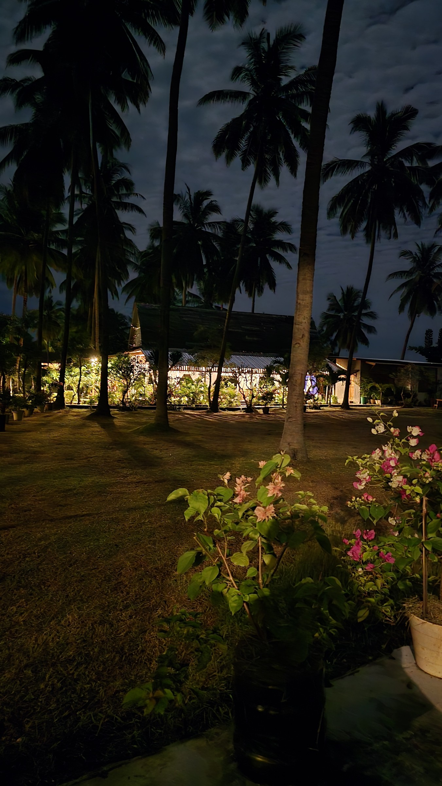
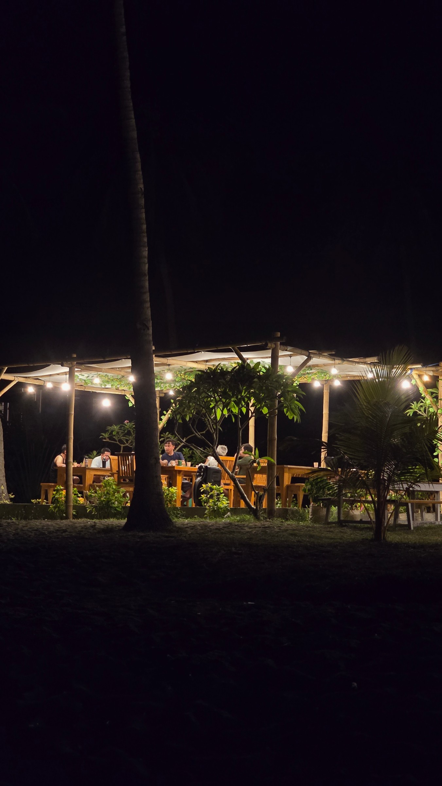

Malam di SunaRi
Saat senja usai, lampu-lampu menyala.
Ketuk untuk lanjut →


02 — 08
Malam di SunaRi
Langit berganti biru
Beberapa menit setelah matahari tenggelam, langit perlahan menjadi biru tua.

03 — 08
Malam di SunaRi
Hangat di antara pohon kelapa
Bangunan kayu dan jembatan kecil yang menyala setiap malam.

04 — 08
Malam di SunaRi
Taman ikut menyala
Lampu-lampu kecil di antara bunga dan pohon kelapa.

05 — 08
Malam di SunaRi
Jalan setapak berlampu
Dari bungalow ke gazebo, ditemani suara ombak.

06 — 08
Malam di SunaRi
Makan malam di Bajoy
Ikan bakar & seafood di bawah lampu gantung, buka sampai 21.00 WITA.

07 — 08
Malam di SunaRi
Malam yang pelan
Tidak ada yang terburu-buru di Selayar.